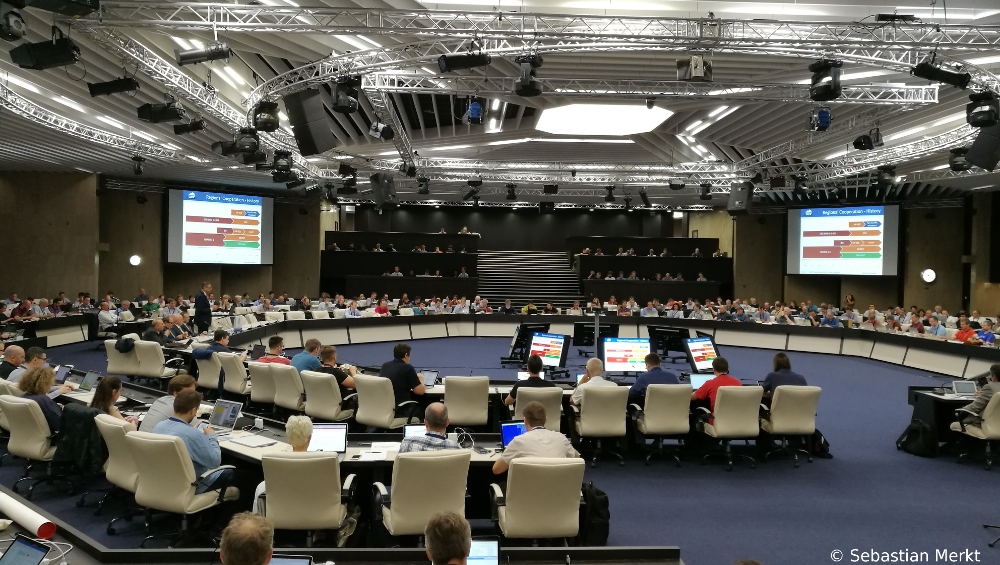

CHEP 2018
The 23rd international conference on Computing in High Energy and Nuclear Physics
CHEP 2018
CHEP 2018 was held from 09. to 13. July in Sofia Bulgaria. This is a short summary of the conference and the location.
More information
The universal science

Prior to the CHEP conference, an outreach event under the title Universal science was held. Experts from different . Topics were research, computing and diversity in science. Also, the ATLAS experiments outreach team showed demonstrations of the ATLASrift Virtual Reality application. Visitors were able to get a feeling how it is to explore the large underground cave where the ATLAS experiment is located.
The venue
CHEP 2018 took place in the National Palace of Culture, NDK, a Soviet era conference center on the heart of Sofia. For the plenary sessions it had a large conference room, arranged in a centered way, with screens in the middle an on the side walls. This gave it kind of a United Nations atmosphere. The parallel sessions were located in several smaller rooms, distributed across 3 different floors. During the breaks, coffee and cookies or other sweet baking goods were served. Lunch was served on a balcony which provided a nice view over the city all while you were trying different local foods. There was usually a buffet with several different main dishes, salads, deserts that changed each day. Dinner was not served at the event, which gave us the opportunity to explore the restaurants and bars in the city. Online computing, Offline computing, Distributed computing, Data Handling, Software development, Machine learning and physics analysis, Clouds, virtualization and containers, Networks and facilities + poster session
The city

Sofia, the capital of Bulgaria was actually a quite ... For me it had surprisingly few sights. Most of them could be seen on a 2 hour city tour, organized by the CHEP organizers. However, then sights that we did see were interesting. It ranged from old Roman ruins and an old Roman highway that is still buried under the modern city to old Christian churched dated from the Ottoman rule, to the "newer" churches, palaces and of course Soviet era buildings. The Sofia nightlife had a lot to offer. We went to several different bars, had all the local beers. Coincidentally, the soccer World Cup in Russia was going on during my stay and we found a public screening in a park close by where the served foods and drinks during the matches.
The side events

For the weekend after the conference the organizers arranged for several side events that people could participate, such as a visit to the Black Sea or an ancient castle. I chose to go for one of the hiking trips into the Pirin mountains, south of Sofia. It was a three day trip that included transportation, accommodation, a visit to the church "St. Teodor Tiron and Stratilat", known for it's beautiful frescoes and a visit to a small village, where a group of local women served us homemade specialties and sang folk songs.
The proceedings
All oral and poster presentations are collected in conference proceedings to be published in the Web Of Conferences journal. Once the review has been completed, a link will be provided. For now, the official ATLAS draft of our proceedings paper "Going standalone and platform-independent, an example from recent work on the ATLAS Detector Description and interactive data visualization" can be found here.